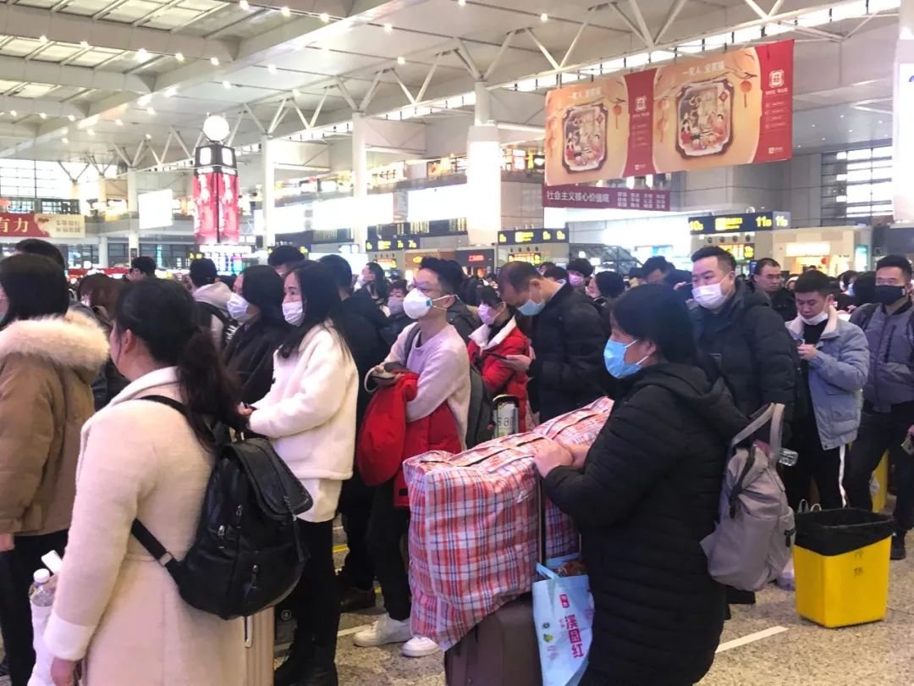
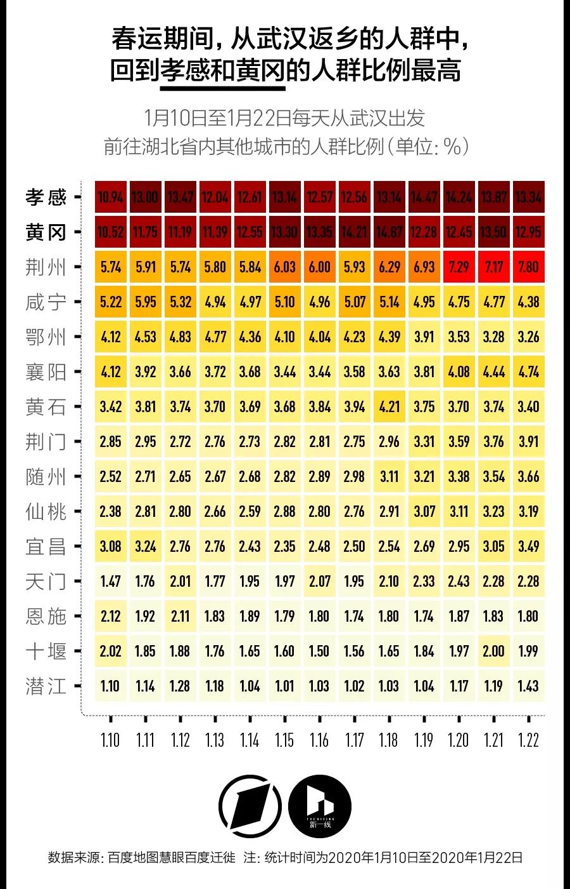

特别报道：面对疫情升级，我们追问10个关键问题
原文链接 备份链接 随着疫情消息的增多，各种关于其来源、如何传播与防控的“传言”也接踵而来。为此，我们采访了相关领域的专业人士，试图解答十个公众最为关心的问题。 记者 | 许冰清 肖文杰 倪妮 张云亭 项维肖 毛怡玫 实习记者 | 文思 …

随着疫情消息的增多，各种关于其来源、如何传播与防控的“传言”也接踵而来。为此，我们采访了相关领域的专业人士，试图解答十个公众最为关心的问题。
记者 | 许冰清 肖文杰 倪妮 张云亭 项维肖 毛怡玫
实习记者 | 文思敏
数据整理 | 实习记者 袁颖
图表制作 | 程星 王方宏
发源于武汉的新型冠状病毒疫情仍在蔓延。截至1月23日24点，全国新型冠状病毒感染肺炎已确诊830例。而可能稍微值得宽慰的一点是，从1月20日开始，中国各地终于开始日益重视这起疫情了。

1月22日的上海虹桥火车站内，不少春运旅客都选择了佩戴口罩。| 摄影：王一越
不过随着疫情消息的增多，各种关于其来源、如何传播与防控的“传言”也接踵而来。为此，《第一财经》YiMagazine采访了研究病毒基因组的科研人员、流行病专家、公共卫生研究者、卫健委内部人士以及城市科学研究者茅明睿等各领域人士，试图解答十个你最为关心，但可能仍充满疑惑的问题。
01
遇到这样的传染病疫情，中国的医疗体系应该怎么运转起来？
应对传染病的体系由许多部门组成。各级疾控中心（疾病预防控制中心）可能是其中的核心。它是一个由政府全资拨款的事业单位，各级卫健委所属。应对传染病是它的重要职责。它有技术力量，有可以检测病原体的实验室，也有从事流行病学调查的专业人员。如果出现传染病疫情，处理方式大致是这样的：
1）医生发现法定传染病；
2）医院通过网络系统上报给地方疾控中心；
3）疾控中心会派流行病学的调查人员，了解接触史等信息；
4）调查人员还会采集病人的样本，让专业的实验室分析病原；
5）调查和检测的结果都会形成报告，再报给卫健委；
6）一般的传染病可能到此为止，但如果事情更严重，可能会触发相关预案。如果要调动医院的床位、医生、增加防护、隔离、转移病人，这些事情就不归疾控中心负责了。卫健委会通过专门管理医院的医政处下发通知；
7）当出现值得注意的异常状况，卫健委会很快抽调全国的相关专家，成立专家组，他们会直接向政府提出各方面的处理建议。就像这次这样。
各地政府编制的应对公共卫生事件的预案中，都考虑到了新传染病和尚未发现的传染病情况，但这种情况下，能否及时上报、调查和处置，更多就靠医疗体系和当地政府的经验和执行能力。这时，反应速度就成了关键。
02
如果我身处医院的发热门诊，医院将如何降低我的被感染概率？
首先，医院会强化清洁消毒管理的工作，比如加强诊疗环境的通风。有条件的医疗机构会实行空气消毒，也可配备循环风空气消毒设备。对诊疗环境、医疗器械、患者用物等也都会做清洁消毒。
其次，医院应该尽量减少患者的拥挤，以减少医院感染的风险。发现疑似或确诊感染新型冠状病毒的患者时，依法采取隔离或者控制传播措施，并按照规定对患者的陪同人员和其他密切接触人员采取医学观察，以及其他必要的预防措施。不具备救治能力的时候，及时将患者转诊到具备救治能力的医疗机构。
近期，医疗机构还会帮助就诊患者及其陪同人员积极了解新型冠状病毒防护知识教育，指导其正确洗手、咳嗽礼仪和居家隔离等。
03
我们经历过SARS了，有什么经验是对这次疫情的处置有帮助的？
现在中国的传染病防治体系，基本是在2003年的SARS疫情后建立起来的。
《传染病防治法》是在2004年实施的。在其中，第一次确定了几个重要原则，比如所有医院的传染病病例，都必须上报卫生部门，而此前，军队所属医院没有这个义务；又比如，在这部法律中，第一次提出了“乙类传染病，采取甲类传染病的预防、控制措施”的方法，这确保了对新型传染病能采取足够强有力的防控措施。这次的新型冠状病毒感染的肺炎，也是按照此标准。
另外，在2003年之后，中国政府的医疗卫生支出增幅迅速增加。2003年是1116亿元，2018年时比这个数字翻了13倍。

*卫生总费用＝政府卫生支出＋社会卫生支出＋个人卫生支出
卫生总费用、政府卫生支出等定义及计算方式详见>>国家统计局卫生和社会服务指标解释
如今，每个省市会有专门的接收传染病患者的医院。平时，它们会收治各类病人，而当其他医院出现了特定的传染病时，一般会转诊到这里，以及其他定点医院，比如肺结核、艾滋病等。而当出现了像SARS这样的疫情时，它可以第一时间建立起隔离病房。
比如上海的公共卫生中心，它就是在SARS疫情后建立的，医院内的草坪下都埋好了管道，应急的时候可以直接搭起板房当临时病房，用来集中隔离治疗。
04
到现在为止，我们面临的情况比SARS时期更严重吗？
传染病的疫情传播是个充满变量的模型。疾病本身的传播属性、所在地的人员密度、人员流动情况、防治措施的采取时间、天气都会产生影响。所以没法完全类比，但有几个时间点可以参考。
所有传染病的防治都可以靠“三板斧”解决：1）控制传染源；2）切断传播途径；3）保护易感人群。这三件事，每件都是越早做到越好。
在第一件事上，这次我们的动作比SARS时候快。
12月30日，武汉卫健委医政医管处发布《关于做好不明原因肺炎救治工作的紧急通知》，称12月以来，武汉开始出现不明原因的肺炎。
1月7日，疾控中心的专家已经分离出了新型冠状病毒；1月10日，复旦大学公共卫生中心的张永振教授团队就在全球病毒研究的学术网站上发布了病毒的全基因组序列。
也就是说，从疾病出现，到确认病原体，只用了不到1个月的时间。
而SARS疫情，用了5个月，才由国外的科学家检测出冠状病毒，并由世卫组织确认其为病原体。
接下来，就是针对病原体和疾病的特性，迅速防控了。这不单是医疗卫生体系的事，因为信息公开、疫情管控、动员等工作，需要政府统筹来完成。
但1月11日开始，武汉市卫健委发布的确诊病例就一直是41例，直到1月16日，升至45例。1月20日，中国卫健委将这个疾病纳入了法定传染病范围。
▲记者：第一财经 吴绵强
05
“武汉肺炎”在波及全国之前，为什么没有先在湖北省境内爆发？
关于这个问题，城市象限创始人兼CEO 、北京市城市规划设计研究院云平台创新中心秘书长茅明睿及其团队通过2018年至2019年的“腾讯迁徙数据”与其他数据的综合研究，给出了一些有意思的讨论视角——
1）湖北省内各市，以及岳阳、信阳、九江等湖北周边地市，都应该加强对来自“武汉都市圈”（注：以武汉为中心，覆盖黄石、鄂州、黄冈、孝感、咸宁、仙桃、潜江、天门等周边8个大中型城市所组成的城市群）的长途大巴乘客的排查。
这是因为，都市圈内的城市跟中心城市有日常的高频联系，甚至是通勤联系。但在目前湖北省披露的疫情数字中，只报告了黄冈市的情况，所以湖北省内疫情存在着被低估或者未被有效统计的可能性。
2）北京、上海、成都、广州、长沙、襄阳、荆州、宜昌等城市，应该加强排查来自于武汉的铁路客源；北京、昆明、沈阳、成都等城市，还要加强排查来自武汉的航班。
在这些城市中，长沙、昆明都是与武汉联系度较高、但目前疫情人数还比较少的新一线城市。这两个城市又是各自都市圈的中心城市，也是城市群的重要节点，所以这两个城市如果暴发疫情，存在一定的扩散能力。
3）被“武汉肺炎”扩散到的北京、上海、广州、深圳这几个一线城市，医疗条件好，信息透明度高，以及有抗非典的经验，民众自我防护意识也很高，所以情况相对乐观。
在介绍目前的这一分析结果之外，茅明睿还特别强调，目前疫区一定要披露细致的公开数据，这样才能有效增加疫区所在地市民的自我防护意识。而目前按照省来公开数据的做法，既不利于市民防护，又不利于各界做出适当的应对，也不利于学者开展有价值的研究。

注：本图仅作为交通方式使用示意图，腾讯迁徙数据还需与其他数据源融合校准。| 图片来源：城市象限

*此图为动态演示图，请留意柱状图数据变化。| 图片来源：新一线城市研究所

戳链接了解更多👉《这13天，离开武汉的人都去了哪里？》| 图片来源：新一线城市研究所
06
新型冠状病毒肺炎目前还没有疫苗或特效药，那么疫苗从研发到上市、再被推广至消费者，还要等多长时间？
非典爆发时期，钟南山院士曾提出了“激素冲击法”的治疗方案，因为大剂量的糖皮质激素冲击可以有效控制这种免疫病理反应，随后糖皮质激素被大量用于非典紧急治疗之中。但这也导致很多患者病愈后出现股骨头坏死症状，以及产生肺部功能障碍和其他药物副作用反应。
在获得新型冠状病毒的基因组序列后，目前，美国包括卫生研究院、休斯顿贝勒医学院，以及得克萨斯、纽约等团队，加拿大萨斯喀彻温大学，以及中国的一个科学家团队都已经开始着手研发相应疫苗。
贝勒医学院的疫苗科学家彼得·霍特兹表示，“冠状病毒是一个相对简单的疫苗靶点。”所以，其研发难度要低于针对艾滋病病毒或流感等其他病毒的疫苗。
疫苗开发完成后，预计还要用几个月时间做第一阶段临床试验，正式投放市场要等到一年多以后。
07
2020年的新型冠状病毒，和SARS病毒相比“新”在何处？
此前我们已知的人类冠状病毒共有六种：其中四种冠状病毒在人群中较为常见，致病性较低；另外两种就是SARS冠状病毒和MERS冠状病毒，都可引起严重的呼吸系统疾病。
此次发现的新型冠状病毒，不同于已发现的所有人类冠状病毒。
2020年1月10日，复旦大学的张永振教授团队在科研网站virological.org首次公布了武汉新型冠状病毒基因组序列。基于该基因组序列，中国科学院上海巴斯德研究所郝沛研究员及其团队于1月21日发布了一项名为《武汉新型冠状病毒进化来源和传染人分子作用通路》的研究成果。在该论文里，郝沛研究员及其团队揭示了新型冠状病毒的进化来源，以及该病毒与SARS冠状病毒、MERS冠状病毒之间存在着遗传进化关系。
新型冠状病毒与SARS病毒的致病机制也类同，都是一种免疫病理反应——当病毒进入体内后，病毒会寄生在活细胞内，诱使人体的免疫细胞开始攻击自己的细胞，由此导致严重的炎症反应。
08
新型冠状病毒到底从哪来，它的传染性和变异性如何？
2003年“SARS”爆发后，研究者们发现SARS冠状病毒的传播途径是“蝙蝠-果子狸-人”，而后国际社会发现蝙蝠是冠状病毒的大本营。此次，郝沛团队通过将新型冠状病毒、SARS冠状病毒与MERS冠状病毒做全基因组比对发现，这几种病毒有着共同的祖先。由此推测，武汉冠状病毒的自然宿主也可能是蝙蝠。
1月22日，北京大学、广西中医药大学、宁波大学等机构在Journal of MedicalVirology 杂志上联合发表的论文则认为，蛇是造成当前武汉新型冠状病毒2019-nCoV感染爆发的最可能的野生动物库。也就是说，此次新型冠状病毒，可能经历了从“蝙蝠-蛇-人”的传播路径。
通过郝沛团队的研究我们发现，新型冠状病毒与SARS病毒的致病机制类同，新型冠状病毒是通过S-蛋白与人ACE2相互作用，来感染人的呼吸道上皮细胞，这意味着从病毒角度提供了可人传人的依据。

钟南山院士在接受央视新闻频道《新闻1+1》栏目采访时，向公众确认了新型冠状病毒会“人传人”。
1月21日，世界卫生组织官员在接受《新京报》采访时仍表示，最新报告的感染信息“目前尚无明确的证据表明（新型冠状病毒可以）持续人传人”。按照长期研究病毒性新发性传染病的香港大学公共卫生学院副教授朱华晨的说法，就是“毒传一两代就断了”，难以实现高效传播，甚至超级传播。
而在1月22日公布最新病例数据时，国家卫健委副主任李斌表示，新型冠状病毒还存在变异的可能。
当地时间1月22日上午，世界卫生组织在日内瓦召开了紧急情况委员会会议。经过两日讨论，世卫组织在当地时间1月23日晚、北京时间1月24日凌晨举行的新闻发布会上宣布，目前暂时不会将新型冠状病毒肺炎疫情界定为“国际关注的突发公共卫生事件”。
而根据《国际卫生条例》的定义，“国际公共卫生紧急事件”是指“通过疾病的国际传播构成对其它国家的公共卫生风险”，并可能需要采取协调一致的“国际应对措施”的“不同寻常”的事件。自2000年代中期实施该规则以来，仅就甲型H1N1流感、脊髓灰质炎疫情、埃博拉疫情和“寨卡”疫情宣布了五次。
09
*此前有研究机构预测新型冠状病毒肺炎在武汉的已感染人数在数千人级别，是否可信？*
目前，交通数据、移动通信数据与社交媒体数据等非传统公共卫生数据都可以用来辅助测算乃至预测流行病的疫情风险。在此次新型冠状病毒肺炎的相关疫情预测中，英国帝国理工学院的MRC全球传染病分析中心与香港大学公共卫生学院都是使用了武汉交通数据作为关键的建模依据。
在MRC的研究方法中，主要是利用境外通报的已确诊病例，来反推武汉市内的情况，关键的模型参数有4个：境外已确诊病例数、每天从武汉机场出境的旅客数、武汉机场每日旅客数，以及病毒的平均潜伏期。这4个参数的数据本身有一定的弹性（比如病毒潜伏期一般估算为10天，但也有可能是8天），所以测算出的已感染人数是一个很大的范围。
利用1月18日政府的通报数据，MRC给出1月18日武汉的感染人数最大上下限范围分别为1000至9700人，标准参数下预测最大可能值为4000人。（MRC报告详见>>News / Wuhan Coronavirus）
在1月22日的国务院办公室新闻发布会上，中国科学院院士、中国疾病预防控制中心主任高福对这一研究结果回应称：“大家知道，认识任何一个新生事物，尤其像这样的病毒，一定是‘事实是事实，知识理论是理论’。……我想随着大家对这个病毒的认识，会去验证这个模型。目前我们掌握的情况，并不是这位科学家计算的模型情况。”
香港大学公共卫生学院1月21日发布的数学模型与MRC类似，利用的是1月17日政府的通报数据，并综合考虑了飞机、火车和公路运输的情况，推测出当日武汉的感染人数最大可能值为1343人，而武汉以外的其他省市最多有可能出现300则感染个案。
香港大学公共卫生医学讲座教授梁卓伟在1月21日同时表示，这一模型考虑到了近日武汉市和全球各城市的防疫措施，以病毒传播力较初期减75%为依据做乐观估算，到大年初七，国外将会增加1-2个感染个案，国内除武汉外其他省市感染个案最高可能增加70个。
但目前，香港大学公共卫生学院网站对于这则研究的相关披露已经增加了一条说明：“由于境外通报病例数在24小时内增加一倍，报告的研究已经不再有效，正在重新调整模型。”（香港大学公共卫生学院报告详见>>HKUMed ）
10
在救治病人的过程中，医护人员又该如何保护自己？
根据不同的接触情形，医护人员要采取不同的防护措施：
比如接触患者的血液、体液、分泌物、排泄物、呕吐物及污染物品时，须戴清洁手套，脱手套后洗手。
可能受到患者血液、体液、分泌物等喷溅时，要戴医用防护口罩、护目镜，穿防体液渗入的长袖隔离衣，戴手套。
为疑似患者或确诊患者做如气管插管、无创通气、气管切开、心肺复苏、支气管镜检查等检查动作时，要采取空气隔离措施——佩戴医用防护口罩，并做密闭性能检测；眼部要戴好护目镜或面罩；穿防体液渗入的长袖隔离衣，戴手套；此外，操作应在通风良好的房间内；房间中人数限制在患者所需护理和支持的最低数量。
以上所有防护用品一旦被患者血液、体液、分泌物等污染，就要及时更换。诊疗疑似或确诊患者的听诊器、体温计、血压计等医疗器具及护理物品也应是专人专用，或在每次使用后应做规范的清洁和消毒。
最后，医疗机构还应合理调配人力资源和班次安排，避免医务人员过度劳累。提供营养膳食，增强免疫力。针对岗位特点和风险评估结果，开展主动健康监测，包括体温和呼吸系统症状等。

一定要保护好自己！| 题图来源：人民日报官方微博。图中为武汉大学人民医院呼吸与危重症医学科医生张旃副教授（中）与她的同事。
本文文字版权归第一财经所有，
未经授权许可不得转载或翻译。

文章已于修改
原文链接 备份链接 随着疫情消息的增多，各种关于其来源、如何传播与防控的“传言”也接踵而来。为此，我们采访了相关领域的专业人士，试图解答十个公众最为关心的问题。 记者 | 许冰清 肖文杰 倪妮 张云亭 项维肖 毛怡玫 实习记者 | 文思 …
原文链接 备份链接 口述 | 许平 记者 | 王珊 从2019年12月31日到现在，我所在医院的病人越来越多了，以发热门诊为例，目前每天病人的体量已经是医院平常病人数的10多倍，我们医院还在距离市中心比较偏的医院。冬季本身就是流感高发季， …
原文链接 备份链接 这注定是一个难捱的春节。 截至1月23日24时， 全国确诊新型肺炎病例830例， 死亡25例。 截至1月23日晚，中国新型肺炎疫情地图（来源：丁香医生） 同时，国际确诊案例也陆续出现。 截至1月23日，数据如下： 泰 …
原文链接 备份链接 【财新网】（记者 黄蕙昭）一则半夜发布的“封城”通告惊动全国，也拉开武汉肺炎防疫之战新势态。1月23日凌晨两点，武汉市新型冠状病毒感染的肺炎疫情防控指挥部通报宣布，今日10时起，武汉公交、地铁、轮渡、长途客运暂停运 …
原文链接 备份链接 新型冠状病毒感染肺炎疫情扩大。武汉本地两天新增确诊136例，死亡1例，治愈出院6例。 北京大兴区新增2例，有武汉旅行史；广东深圳新增1例，曾到武汉探亲。这是内地首次在武汉之外的城市报告病例。 国家卫健委卫生应急办 …